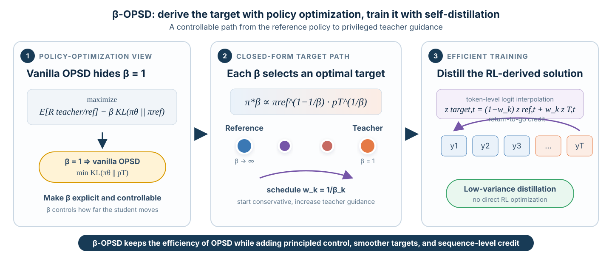

TL;DR. Vanilla on-policy self-distillation (OPSD) is exactly one point, \(\beta=1\), in a broader family of KL-regularized policy-optimization objectives. This observation lets us replace direct teacher imitation with a controllable path from the student’s reference policy to a privileged teacher. We derive that path using reinforcement learning, realize it efficiently by interpolating token logits, and use return-to-go credit assignment to train at the sequence level. Across Qwen3 models from 1.7B to 8B parameters, β-OPSD improves the average math-reasoning score over vanilla OPSD at every model scale.

Why can self-distillation be brittle?
On-policy self-distillation is an appealing recipe for improving reasoning models. A student generates its own solution, while a teacher—given privileged information available only during training, such as a reference solution—provides token-level supervision along that student-generated trajectory.
This combines two useful properties:
- The data are on-policy. The teacher responds to the states the student actually visits.
- The supervision is dense. The model receives token-level guidance rather than only a final binary reward.
But standard OPSD asks the student to imitate the teacher directly. When the student and teacher distributions are far apart, that target may be too aggressive. In practice, this can make training sensitive and require considerable engineering.
Our starting question is simple:
Must the privileged teacher always be the only principled target?
The answer is no. Direct teacher matching is a special case of a larger policy-optimization family—and exposing that family gives us a natural control knob.
Vanilla OPSD is policy optimization at \(\beta=1\)
Let
- \(\pi_\theta(y\mid x)\) be the student policy,
- \(p_T(y\mid x,c)\) be the privileged teacher, which also observes training-only context \(c\), and
- \(\pi_{\mathrm{ref}}(y\mid x)\) be a reference policy.
Consider the standard KL-regularized policy-optimization objective
where \(\beta>0\) controls how strongly the updated policy stays anchored to the reference. Now define the reward as a teacher-to-reference log ratio:
Substituting this reward gives the β-OPSD objective
At \(\beta=1\), the reference-policy terms cancel:
That is exactly the sequence-level reverse-KL objective underlying vanilla OPSD. In other words, OPSD is not separate from policy optimization: it is precisely the \(\beta=1\) member of this family.
This equivalence turns an implicit design choice into an explicit one. Instead of always pushing the student directly toward the teacher, \(\beta\) controls the balance between teacher guidance and proximity to the reference policy.
A path of optimal policies
The policy-optimization view does more than reinterpret OPSD. It tells us what the optimal target should be for every value of \(\beta\).
For fixed \(\beta\), the optimal sequence-level policy has the closed form
where \(Z_\beta(x,c)\) is a normalizing constant. This is a geometric interpolation between the reference policy and the privileged teacher.
For \(\beta\geq1\):
- \(\beta=1\) gives the teacher endpoint;
- increasing \(\beta\) produces a more conservative target; and
- \(\beta\rightarrow\infty\) approaches the reference policy.
It is convenient to write the teacher weight as
Then \(w=0\) is the reference endpoint and \(w=1\) is the teacher endpoint. Rather than making an abrupt jump to direct teacher imitation, training can follow a smooth curriculum along this path.
Derive with RL, train with distillation
The closed-form result is a sequence-level distribution, but computing its normalizer would require summing over all possible completions. Directly optimizing the corresponding RL objective would also introduce costly rollouts, advantage estimation, and high-variance gradients.
We therefore use policy optimization to derive the destination, then return to distillation to reach it.
At token position \(t\), let \(h_t=(x,y_{<t})\) be the current prefix. Let \(z_{\mathrm{ref}}(\cdot\mid h_t)\) and \(z_T(\cdot\mid h_t,c)\) denote the reference and teacher logits. We construct a local target by linearly interpolating those logits:
Linear interpolation in logit space is exactly normalized geometric interpolation in probability space. Applying it at every prefix gives a tractable autoregressive approximation to the sequence-level optimum.
In our main experiments, the reference logits come from a stop-gradient copy of the current student, and the teacher weight follows a bounded linear schedule:
We use \(w_{\mathrm{start}}=0.5\) and \(w_{\mathrm{end}}=0.8\). Early in training, the target remains relatively close to the student; later, privileged teacher guidance becomes stronger.
The key practical benefit is that this target is cheap. Once the two sets of logits are available, constructing it requires only a weighted sum and a softmax. No additional RL optimization loop is needed.
Giving early tokens credit for future consequences
A second issue arises from the sequence structure of language generation. An early token changes every prefix that follows it, so it can affect future student–target mismatch. A purely local token loss ignores this effect.
For a sampled trajectory \(y\sim\pi_\theta(\cdot\mid x)\), define the token-level mismatch
β-OPSD assigns each token a discounted return-to-go:
The practical loss is
where \(\operatorname{sg}(\cdot)\) denotes stop-gradient. When \(\gamma=1\), the return-to-go estimator recovers the exact sequence-level gradient; in practice, we use \(\gamma=0.99\) to control its magnitude on long generations.
This makes the algorithm differ from vanilla OPSD in only two essential ways:
- Replace the fixed teacher target with a scheduled reference–teacher logit interpolant.
- Replace local token weights with return-to-go weights that account for future mismatch.
Experimental results
We train instruct-tuned Qwen3-1.7B, Qwen3-4B, and Qwen3-8B models on the mathematical-reasoning subset of OpenThoughts. The student sees only the problem; the privileged teacher also sees the ground-truth solution. We evaluate with avg@12 on AIME 2024, AIME 2025, and HMMT 2025.
At the 100-step checkpoint of a 200-step training schedule, β-OPSD achieves the best average score among the evaluated methods at every model scale:
| Model | Vanilla OPSD | β-OPSD | Absolute gain |
|---|---|---|---|
| Qwen3-1.7B | 31.02 | 36.76 | +5.74 |
| Qwen3-4B | 56.11 | 57.87 | +1.76 |
| Qwen3-8B | 58.52 | 60.18 | +1.66 |
The gain is largest for Qwen3-1.7B, where β-OPSD improves over vanilla OPSD by 9.16 points on AIME 2024, 5.27 points on AIME 2025, and 2.78 points on HMMT 2025. This is consistent with the intuition that smoothing the target is especially valuable when the gap between student and teacher is large.
What matters in the method?
Controlled ablations on Qwen3-1.7B isolate both components.
With the same return-to-go estimator, replacing direct teacher distillation with the β-OPSD interpolant improves avg@12 by:
- +6.03 on AIME 2024,
- +5.30 on AIME 2025, and
- +1.67 on HMMT 2025.
With the same interpolant target, replacing local token gradients with return-to-go credit assignment improves avg@12 by:
- +1.12 on AIME 2024,
- +5.55 on AIME 2025, and
- +3.61 on HMMT 2025.
The interpolation schedule also matters. Among the schedules tested, increasing the teacher weight from \(0.5\) to \(0.8\) gives the strongest overall result, although other schedules can perform better on individual benchmarks. This opens a natural direction for adaptive schedules that respond to model scale, training progress, or the measured student–teacher gap.
The broader lesson
β-OPSD connects policy optimization and self-distillation in both directions:
The policy-optimization view supplies a principled family of targets. Distillation supplies a simple, low-variance way to train toward them. Return-to-go credit assignment keeps the practical token-level update aligned with the sequence-level objective.
The result is a small change to the OPSD training recipe with a useful conceptual payoff: the privileged teacher is no longer an all-or-nothing destination. It becomes one endpoint of a controllable path.
Citation
If you find this work useful, please cite:
@article{xu2026betaopsd,
title = {{$\beta$-OPSD: Deriving with Policy Optimization,
Training with Self-Distillation}},
author = {Xu, Jiawei and Liu, Minghui and Zhang, Juzheng and
Goldstein, Tom and Huang, Furong},
year = {2026},
journal = {arXiv preprint arXiv:2607.28582}
}Paper: arXiv:2607.28582 · Project page · Code